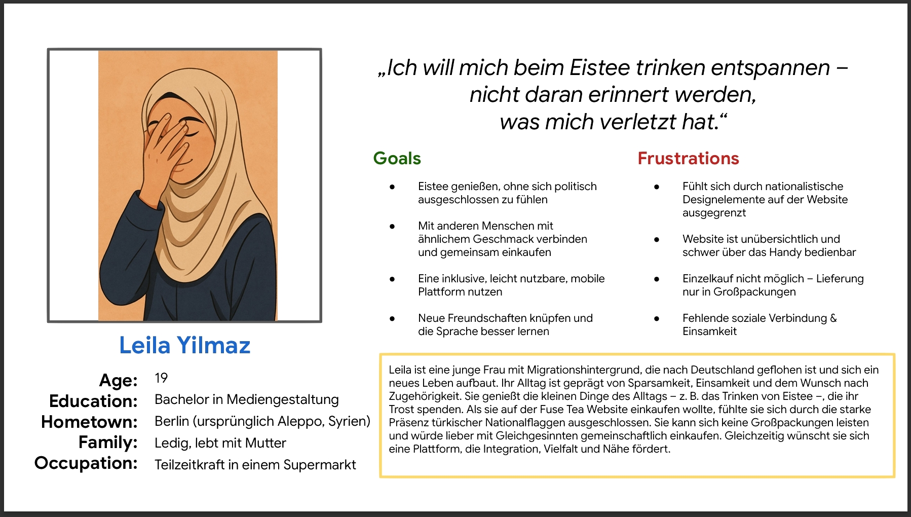

Der Arbeitsprozess Ⅲ
Empathiephase im UX-Designprozess – Beispiel & Analyse
UX-Rechercheergebnisse
- Der Großteil der Benutzer ist zwischen 16 und 35 Jahre alt.
- Die Mehrheit der Benutzer hat einen ausländischen Hintergrund.
- Die Kunden des Start-ups sind überwiegend Endkonsument:innen.
- Die ursprüngliche Startseite enthielt eine Illustration mit nationaler Symbolik und bot wenig Orientierung. Dies führte zu Verunsicherung bei Nutzer:innen mit unterschiedlichem kulturellen Hintergrund.
- Wenn wir eine inklusivere Bildsprache einsetzen und die Inhalte klar gliedern, steigert das die emotionale Bindung und verbessert den Userflow.
Problem Statement
Hypothesis Statement
- Wie könnten wir visuelle Inhalte gestalten, die kulturell inklusiv wirken?
- Wie könnten wir Urlaubssymbole nutzen, ohne nationalistische Konnotationen?
- Wie lässt sich eine internationale Identität betonen?
- Wie schaffen wir visuelle Kongruenz über die gesamte Website hinweg?
- Wie fördern wir ein emotional positives Markenerlebnis?
- Wie könnten wir Packungsgrößen für Endkonsument:innen attraktiver gestalten?
Ausgangssituation
In der Empathy Phase untersuchte ich visuelle Inhalte der Startseite. Dabei fiel auf, dass eine Illustration unter „Unsere Geschichte" unbeabsichtigt exkludierende visuelle Elemente enthielt.
Empathy Maps & Persona

- Problem: Das vorherige Bild zeigte einen Jungen mit Türkei-Shirt – potenziell ausgrenzend für Besucher:innen mit anderer Herkunft.
- UX-Ziel: Inklusivität, Emotionalität und Identifikation für alle Nutzergruppen stärken.
- Maßnahme: Austausch durch eine lila-pinkfarbene Grafik mit Hawaii-Hemd statt Nationalflagge.
- Visuelle Wirkung: Pink und Violett fördern laut Farbpsychologie Entspannung, Lust und Nostalgie.
- Lösung für Packungsgrößen: Einführung von 12er-Packs statt 24er – gezielt für Endnutzer:innen.